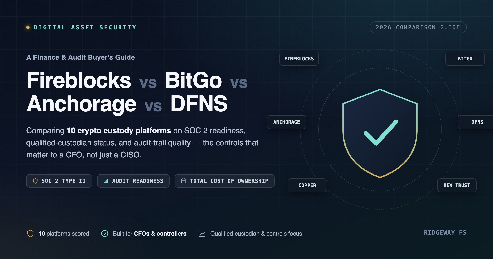

If you are choosing — or re-evaluating — a digital asset custody platform for your business, this is for you.
The shift nobody priced in
Custody used to be a security question: does the platform use MPC, HSMs, or multisig, and is the cryptography sound? In 2026, that question is mostly settled. It is becoming an operational-finance question instead: can your auditors sign off on it, can your accounting team reconcile it, and can you actually get your data out if you need to leave?
Ridgeway Financial Services put ten major institutional digital-asset security and custody platforms side by side — Fireblocks, BitGo, Copper, Ledger Enterprise, Ripple Custody, Anchorage Digital, DFNS, Fordefi, Safe, and Hex Trust — and reached a conclusion worth sitting with: “Custody platforms differ more in audit-readiness and internal-control compatibility than in core security technology.” (Ridgeway Financial Services)
That matches what we have been saying about custody for a while: the hard part was never the cryptography. It is everything built around it.
Security is a solved (well, almost and technically) problem
Every platform in the comparison uses mature, well-understood cryptographic approaches — MPC, HSMs, secure enclaves, or on-chain multisig:
| Platform | Security method | Custody status |
|---|---|---|
| Fireblocks | MPC | Regulated via Fireblocks Trust Company (NYDFS limited-purpose trust) |
| BitGo | Multisig + HSM | BitGo Bank & Trust, N.A. (federally chartered) |
| Anchorage Digital | Secure enclave (HSM, TEE) | Federally chartered bank |
| Copper | MPC (one offline share) | Infrastructure only — no custody entity |
| DFNS | MPC | Infrastructure only — API-first |
| Fordefi | MPC self-custody | Infrastructure only |
| Ledger Enterprise | Hardware root of trust | Infrastructure only |
| Ripple Custody | Multiple | Ripple-owned regulated entities |
| Hex Trust | Multiple | APAC-focused regulated custodian |
| Safe | On-chain multisig | Open-source, no custody entity |
(Security method and custody status per Ridgeway Financial Services’ comparison.)
None of these are exotic anymore. MPC, HSMs, and multisig have all been in institutional production for years. If you are evaluating a platform primarily on which cryptographic scheme it uses, you are asking a question the market has already answered. The real evaluation happens one layer up.
The seven things that actually separate these platforms
According to Ridgeway’s analysis, the meaningful differences cluster around seven areas:
1. Regulated custody — who actually holds the assets, and under which legal entity?
Only some providers pair their technology with a qualified-custodian entity. Anchorage Digital Bank, BitGo Bank & Trust, N.A., and Fireblocks Trust Company hold federal or NYDFS charters. DFNS, Copper, Ledger Enterprise, Fordefi, and Safe are infrastructure only — if you need a qualified custodian, you have to pair the platform with one separately.
2. Audit readiness — SOC 2 Type II, audit-log quality, and auditor support.
All ten platforms claim SOC 2 Type II availability, but Ridgeway is direct about what that means in practice: “SOC 2 status should be treated as vendor-reported until the company reviews the current report.” The report needs to be current (within twelve months), and its scope — including any subservice organizations — has to be reviewed under NDA, not taken from a marketing page.
3. Internal controls — segregation of duties, approval policies, and change management.
This is the gap most companies underestimate. Ridgeway’s finding: “A custody platform alone does not satisfy a company’s internal control obligations. Policies, approval workflows, segregation of duties, and reconciliation procedures must be designed independently and documented for audit.” A platform can enforce a transaction policy technically while your organization has no procedure document describing it, no mapping from roles to a segregation-of-duties matrix, and no change-management approval when that policy changes.
4. Reconciliation — how easily custody activity integrates with accounting and GL systems.
Ridgeway’s framing: “The platform that minimizes manual reconciliation is the platform that scales.” Real-time or end-of-day export in a clean GL-compatible format matters more at scale than almost any other feature. Copper’s off-exchange settlement layer (ClearLoop) was flagged as a specific case requiring additional reconciliation infrastructure.
5. Total cost of ownership — integration, reconciliation, controls, and audit work can exceed the platform fee.
Most enterprise platforms quote custom pricing rather than a published rate card, and Ridgeway notes that “year-one TCO frequently runs materially higher than the published platform fee” once you add integration engineering (typically 3–9 months), reconciliation tooling, audit evidence preparation, internal-controls design, and operational staffing.
6. Migration risk — can historical transaction and audit data actually be exported in a useful format?
Ridgeway’s conclusion is blunt: “Custody platform migrations are expensive, slow, and risky.” If you cannot answer, in advance, how your audit trail and transaction history export on day one, you are accepting lock-in you have not evaluated.
7. Jurisdiction — a platform built for the US may not fit APAC or European operations.
State money-transmitter licensing, the New York BitLicense, MiCA in Europe, and the SEC’s 2026 staff statement on broker-dealer registration of front-end interfaces all intersect with platform choice differently depending on where you operate. A platform’s regulatory strength in one jurisdiction does not transfer to another.
Qualified custodian vs. infrastructure-only
This distinction shows up throughout Ridgeway’s report and is easy to miss if you are evaluating platforms purely on developer experience:
| Category | Platforms | What it means |
|---|---|---|
| Qualified custodian entity | Anchorage Digital Bank, BitGo Bank & Trust N.A., Fireblocks Trust Company, Ripple-owned entities | The platform itself can legally hold assets under a bank or trust charter |
| Infrastructure only | DFNS, Copper, Ledger Enterprise, Fordefi, Safe | You need to pair the platform with a separate qualified custodian if your regulatory profile requires one |
Neither category is universally “better” — infrastructure-only platforms are often the right choice for self-custody or hybrid models. But conflating the two during procurement is one of the more common — and expensive — mistakes Ridgeway’s report points to.
Embedded wallets are a different animal
Several platforms — DFNS, Fireblocks, Ripple Custody among them — offer embedded wallet infrastructure for fintechs building user-facing products, not just institutional custody. Ridgeway flags a subtlety worth internalizing: “Customer balances may flow through the platform as customer funds rather than company assets, which creates a different presentation in financial statements and a different MTL analysis.” If your use case is an embedded wallet rather than treasury custody, the accounting and licensing questions are not the same ones covered by a standard custody evaluation.
Thirteen questions to ask before you sign
Ridgeway compiled a due-diligence list for CFOs evaluating any of these platforms. Condensed:
| # | Question |
|---|---|
| 1 | Is a current SOC 2 Type II report available under NDA? |
| 2 | Is external auditor evidence contractual, or does it cost extra? |
| 3 | What is the legal custody entity, and what is its regulatory status? |
| 4 | Is segregation of duties enforced at the policy level? |
| 5 | Is the audit-log export format compatible with your tooling? |
| 6 | What data can you export if you migrate off the platform? |
| 7 | What does the insurance actually cover, and who is the underwriter? |
| 8 | What is the incident-response process and timeline? |
| 9 | What is your exposure to key-personnel risk at the vendor? |
| 10 | Does the platform’s regulatory framework match your qualified-custody obligations? |
| 11 | What is the reconciliation export cadence, and how well does it map to your GL? |
| 12 | What is realistic all-in year-one TCO, not just the platform fee? |
| 13 | What percentage of the vendor’s revenue comes from its top five customers? |
That last one is easy to skip and worth asking anyway — customer concentration is a business-continuity signal, not a technology one.
Where this lands
Ridgeway’s headline recommendation is not a ranking: “For most fintech and crypto companies, the right answer is not a single ‘best’ platform but the platform best aligned to the company’s regulatory profile, its auditor’s expectations, and its accounting team’s tooling.” They put it even more sharply elsewhere in the report: the platform that is best for a Head of Engineering is rarely the platform that minimizes audit findings, simplifies SOC reporting, or keeps a fintech aligned with its money-transmitter obligations.
That is the same conclusion we keep arriving at from a different direction. The cryptography — MPC, HSMs, multisig, secure enclaves — is table stakes now. What is not solved, across every platform on this list, is the governance layer sitting on top of it: who can approve what, how that gets proven to an auditor, how it reconciles to your books, and what happens the day you need to leave. A perfectly implemented key-management scheme does not answer any of those questions by itself.
Primary source: Ridgeway Financial Services — “Digital Asset Security Platforms Compared: DFNS vs Fireblocks vs Anchorage (2026)”. All comparative claims, quotes, and the platform-by-platform data above are drawn from that report; verify current SOC 2 status, custody licensing, and pricing directly with each vendor before making a procurement decision.